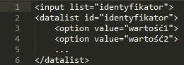
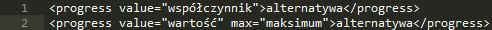

Formularze
Umożliwiają wstawienie na stronie interaktywnych formularzy, które po wypełnieniu przez użytkownika mogą zostać wysłane na serwer, poprzez e-mail lub obsłużone przez skrypty działające w przeglądarce.
ALTERNATYWA
Alternatywna zawartość, wyświetlana w przeglądarkach, które nie obsługują HTML5. Powinno się tam umieścić np. tekst "Proszę czekać..." albo "Ukończono: 50%".
WSPÓŁCZYNNIK
Wartość z przedziału od 0.0 (stopień postępu 0%) do 1.0 (100%).
WARTOŚĆ
Liczba z przedziału od 0 (zero) do maksimum.
MAKSIMUM
Maksymalna wartość, po osiągnięciu której zadanie uważa się za ukończone (100%).
DATALIST
Tworzy listę rozwijaną (kombi) dla elementu INPUT. Element DATALIST nie wyświetla się na ekranie, dlatego nie powinien sprawiać kłopotów w przeglądarkach, które nie obsługują HTML5. Wtedy użytkownik będzie zmuszony co prawda ręcznie wpisać pełną wartość w polu, ale przynajmniej w formularzu nie pojawią się żadne nieoczekiwane elementy.

KEYGEN
Kontrolka do generowana pary kluczy kryptograficznych.
OUTPUT
Pewien rodzaj danych wyjściowych, np. wynik obliczeń ze skryptu.
PROGRESS
Stopień ukończenia zadania - np. pobierania albo w czasie wykonywania czasochłonnych operacji.
- Nieokreślony stopień ukończenia:
- Pasek postępu:

ALTERNATYWA
Alternatywna zawartość, wyświetlana w przeglądarkach, które nie obsługują HTML5. Powinno się tam umieścić np. tekst "Proszę czekać..." albo "Ukończono: 50%".
WSPÓŁCZYNNIK
Wartość z przedziału od 0.0 (stopień postępu 0%) do 1.0 (100%).
WARTOŚĆ
Liczba z przedziału od 0 (zero) do maksimum.
MAKSIMUM
Maksymalna wartość, po osiągnięciu której zadanie uważa się za ukończone (100%).
METER
Wynik pomiaru - np. zapełnienie dysku.
- Pasek wyniku:
- Minimum i maksimum:
- Przedziały wartości:
- Wartość optymalna:
ALTERNATYWA
Alternatywna zawartość, wyświetlana w przeglądarkach, które nie obsługują HTML5. Powinno się tam umieścić np. zapisaną tekstowo wartość, którą przedstawia pasek wyniku.
WSPÓŁCZYNNIK
Wartość z przedziału od 0.0 (0%) do 1.0 (100%).
WARTOŚĆ
Liczba z przedziału od minimum do maskimum.
MINIMUM, MAKSIMUM
Przedział dopuszczalnych wartości jakie może osiągnąć wynik.
NISKI, WYSOKI, OPTYMALNY
Liczby z przedziału od 0.0 do 1.0 (niski ≤ wysoki), które określają, jaka wartość współczynnika jest uznawana odpowiednio za: niską, wysoką, optymalną.
NISKA, WYSOKA, OPTYMALNA
Liczby z przedziału od minimum do maksimum (niska ≤ wysoka), które określają, jaka wartość jest uznawana odpowiednio za: niską, wysoką, optymalną.
Oprócz wymienionych tutaj znaczników, do elementów formularzy zaliczamy również: FORM, FIELDSET, LEGEND, LABEL, INPUT, BUTTON, SELECT, OPTGROUP, OPTION, TEXTAREA.
Pole INPUT
Znany ze specyfikacji HTML 4.01 element INPUT, tworzy większość rodzajów kontrolek formularzy. O tym, jaki typ elementu zostanie wyświetlony na ekranie, decyduje wartość atrybutu type="...". W języku HTML5 wprowadzono wiele dodatkowych typów kontrolek dla znacznika INPUT. W przypadku kiedy przeglądarka nie będzie obsługiwać nowych typów kontrolek, na ekranie zostanie wyświetlone zwykłe pole tekstowe (input type="text").
Lista nowych typów elementu INPUT (wartości atrybutu type="..."):- color - Kolor (Firefox 29, Opera, Chrome)
- date - Data (Opera, Chrome)
- datetime - Data i czas (Opera 12-)
- datetime-local - Data i czas lokalny (Opera, Chrome)
- email - Adres poczty e-mail (Internet Explorer 10, Firefox, Opera, Chrome)
- month - Miesiąc (Opera, Chrome)
- number - Liczba (Firefox 29, Opera, Chrome)
- range - Przedział liczbowy (Internet Explorer 10, Firefox, Opera, Chrome)
- search - Pole wyszukiwania (interpretuje: Internet Explorer 10 Opera 15, Chrome)
- tel - Numer telefonu
- time - Czas (Opera, Chrome)
- url - Adres URL (Internet Explorer 10, Firefox, Opera, Chrome)
- week - Tydzień w roku (Opera, Chrome)
- Minimum i maksimum: